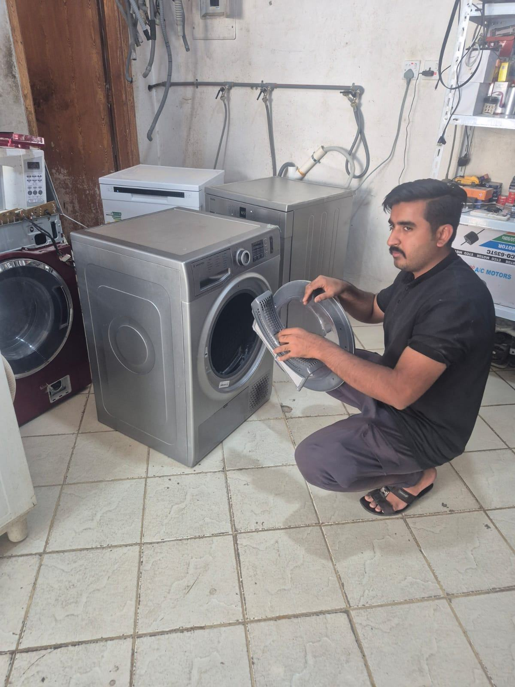

Why Is My Dryer Not Heating Up? لماذا لا تسخن نشافتي؟

A dryer that tumbles normally but produces little or no heat is one of the most common calls we get. The drum spinning tells you the motor is fine — the fault sits with one of a small number of heating-related parts.
1. A blown heating element
The heating element is what actually warms the air passing through the drum. Over years of use it can burn out, much like an oven element. This is the single most common cause of a no-heat dryer and is usually a straightforward part replacement.
2. A tripped thermal fuse
Dryers have a safety thermal fuse that cuts power to the heating element if the machine overheats — often because of restricted airflow. Once tripped, it needs replacing, but if the underlying airflow blockage isn't cleared too, it will trip again.
3. Blocked vents or a clogged lint path
A full lint filter or a blocked exterior vent restricts airflow, causing the dryer to overheat internally and trip its safety switches. This is worth checking first since it's something you can inspect yourself before booking a repair.
How to tell them apart
If clothes take much longer to dry rather than not drying at all, and the machine feels warmer than usual on the outside, a blocked vent is the likely cause. If there's no heat at all from a cold start, a heating element or thermal fuse fault is more likely — both need a proper multimeter check to confirm.
Don't just keep re-running cycles
Running a dryer repeatedly on a no-heat fault wastes electricity and time without fixing anything. A technician can identify which of these three faults is responsible in one visit and repair it with the correct part.
النشافة التي تدور بشكل طبيعي لكنها لا تسخن أو تسخن بشكل ضعيف هي من أكثر الحالات شيوعًا التي نستقبلها. دوران الحوض يعني أن المحرك سليم — والعطل يكمن في أحد عدد محدود من أجزاء التسخين.
١. تلف عنصر التسخين
عنصر التسخين هو المسؤول فعليًا عن تسخين الهواء المار عبر الحوض. مع سنوات الاستخدام قد يحترق، تمامًا مثل عنصر الفرن. هذا هو السبب الأكثر شيوعًا لعدم تسخين النشافة، وعادة ما يكون استبدال القطعة أمرًا بسيطًا.
٢. انقطاع الفيوز الحراري
تحتوي النشافات على فيوز حراري للأمان يقطع التيار عن عنصر التسخين عند ارتفاع الحرارة الزائد — غالبًا بسبب ضعف تدفق الهواء. بعد انقطاعه يجب استبداله، لكن إذا لم يُعالج سبب ضعف التهوية سيتكرر انقطاعه مجددًا.
٣. انسداد فتحات التهوية أو مسار الوبر
امتلاء فلتر الوبر أو انسداد فتحة التهوية الخارجية يقيّد تدفق الهواء، ما يسبب ارتفاع الحرارة داخليًا وتفعيل مفاتيح الأمان. يستحق هذا الفحص أولاً لأنه أمر يمكنك فحصه بنفسك قبل حجز إصلاح.
كيف تميّز بينها
إذا كانت الملابس تحتاج وقتًا أطول للجفاف بدلاً من عدم جفافها إطلاقًا، وشعرت أن الجهاز أكثر دفئًا من المعتاد من الخارج، فالسبب المرجح هو انسداد التهوية. أما إذا لم يكن هناك أي تسخين من بداية التشغيل، فالأرجح عطل في عنصر التسخين أو الفيوز الحراري — وكلاهما يحتاج فحصًا بجهاز قياس مناسب للتأكد.
لا تكرر تشغيل الدورات فقط
تشغيل النشافة بشكل متكرر مع وجود عطل عدم التسخين يهدر الكهرباء والوقت دون إصلاح شيء. يمكن للفني تحديد أي من هذه الأعطال الثلاثة هو السبب في زيارة واحدة وإصلاحه بالقطعة الصحيحة.